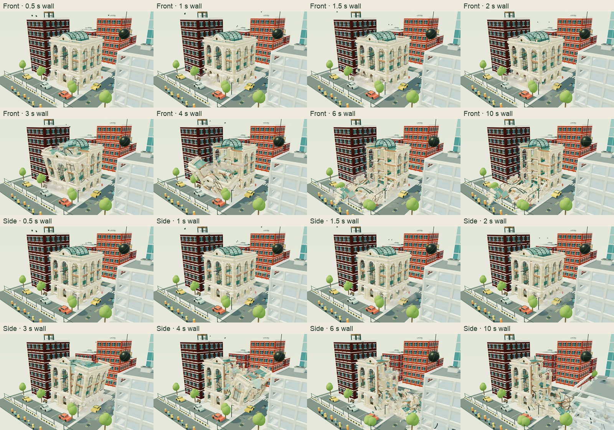
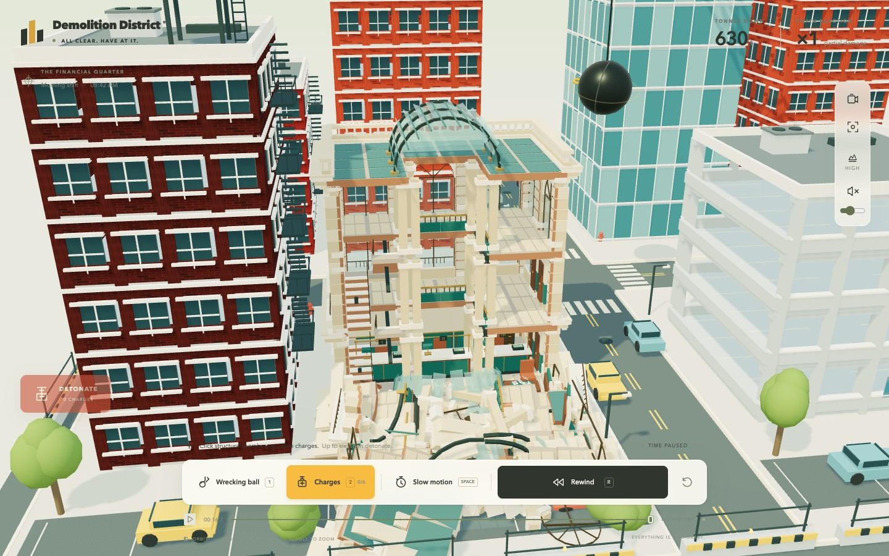
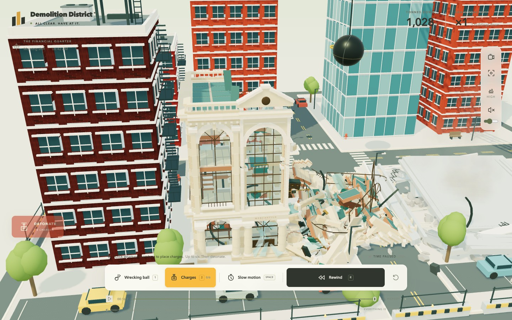
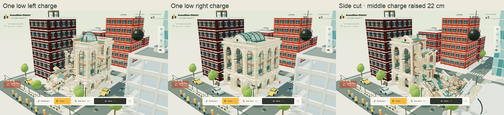

Choose a cut, then follow the tall masonry and roof into the ruin. Both sides use the same ordinary charges and camera. All recordings are muted and play at their captured wall-time speed.
Accepted checkpoint · PR #5
Round Seven · unmerged candidate
The camera and requested placements match; browser frame intervals and simulation progress vary. Playback starts together, but is not frame-synchronized. The candidate's busy collapse is slower to simulate. See the measured cost and exact accepted body anchors in the notes. The clean comparison hides dust, event grit and event lights only; physical neighbors and all architectural rubble remain enabled.
Rewind, a later cut, and rebuild
This canvas recording includes normal and native slow motion, reverse, retained replay, a new charge on damaged construction, and pristine rebuild. The interface actions and times are recorded in the native control evidence.
Front and side progression

Different surviving ruins

Front cut, second viewing angle.

Side cut, same second viewing angle.
Partial wounds and a nearby placement

A single right charge leaves a small wound; a single left charge can trigger a larger partial wing failure. Raising the middle side charge by 22 cm still produces a side-wing failure.
Read the review notes for the exact baseline and result, ordinary placements, checks, performance, and limitations.